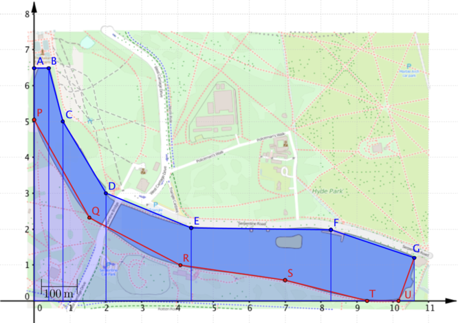
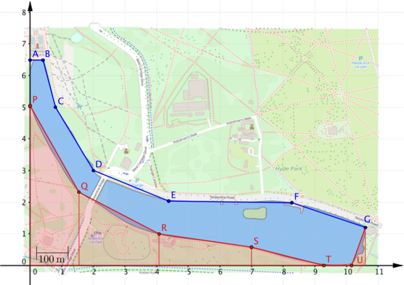
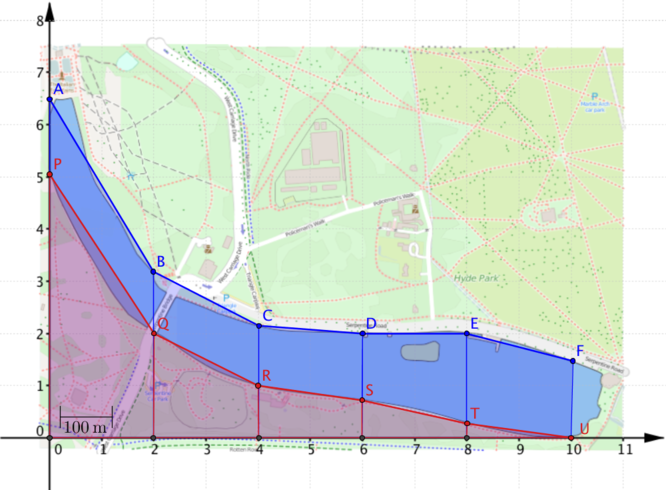

Can you explain why the following equation will give us the area of the region covered by the two trapezia in this diagram?
area=(2.0−0.8)×5.0+3.02+(4.4−2.0)×3.0+2.02
We can extend this idea to find the area of the entire region between the x-axis and the top (blue) boundary, formed by joining the points A,B,…,G, and use this to find the area of the lake.

Using the coordinates of the points A,B,…,G in the diagrams above, we can compute the area of the region between the blue boundary and the x-axis. We’ll call this the ‘blue area’.
blue area=0.4(6.5+6.52)+0.4(6.5+5.02)+1.2(5.0+3.02)+2.4(3.0+2.02)+3.9(2.0+2.02)+2.3(2.0+1.22)=27.18

We can do the same using points P,Q,…U,G to find the region between the lower (red) boundary and the x-axis. We’ll call this the ‘red area’, and use both areas (blue and red) to find the area of the lake. Note that this will be the area in terms of square units on the graph, rather than acres.
red area=1.5(5.1+2.32)+2.6(2.3+1.02)+2.9(1.0+0.62)+2.3(0.6+0.02)+0.9(0.0+0.02)+0.4(0.0+1.22)=13.09
Therefore the area of the region between the blue area and the red area (our approximation for the lake) is 14.09 square units. Using the scale on the map (1 unit =100m) we can convert this into acres (1 acre ≈4047m2). Calculating the area of the lake this way gives us 34.8 acres.
Does this answer suggest that the 40 acre claim is reasonable?
Streamlining the calculations
In the previous calculations we had to work out the area of each trapezium separately, but you may have noticed that the lengths of the parallel sides of most of the trapezia occur twice in the equations. For example, 3.0 occurs twice in the equation which gives the blue area. It would be nice to exploit this in some way.
How might the calculations have been different if the points on the boundary had been chosen in this way?

In the first calculation the length of the shared side of the two trapezia is multiplied by the widths of the two trapezia. What would happen if you had three trapezia instead? By arranging the points along the lake boundary so that their x-coordinates are evenly spaced, all the trapezia have the same width and this width is a common factor of each term in the expression for the whole area.
We’ll look in more detail at how the choice of points affects the calculation of the area between the blue boundary and the x-axis.
blue area=2(6.5+3.22)+2(3.2+2.12)+2(2.1+2.02)+2(2.0+2.02)+2(2.0+1.52)=22(6.5+3.2+3.2+2.1+2.1+2.0+2.0+2.0+2.0+1.5)=22(6.5+2(3.2+2.1+2.0+2.0)+1.5)
You may be wondering why this equation hasn’t been simplified further. If you’re trying to generalise, it can be helpful not to simplify expressions too much before looking at them carefully.
For example, there are lots of terms in these calculations and there are lots of 2s.
Can you explain where each of 2s in the equation comes from?
Which parts of the equation would change if the trapezia were of width 3?
How many trapezia have we used and how many points have we drawn on the lake boundary?
The choice of evenly spaced coordinates allows us to streamline the calculations for finding the blue area and the red areas. In this particular problem we actually want to find the area between the blue and the red boundaries. How could you combine the information from the coordinates of the red and blue points into a single calculation?
The choice of evenly spaced points with the same x-coordinates means that we can choose between calulating the red and blue areas separately or combining the coordinates into a single calculation.
What could be the advantages or disadvantages of the two approaches?